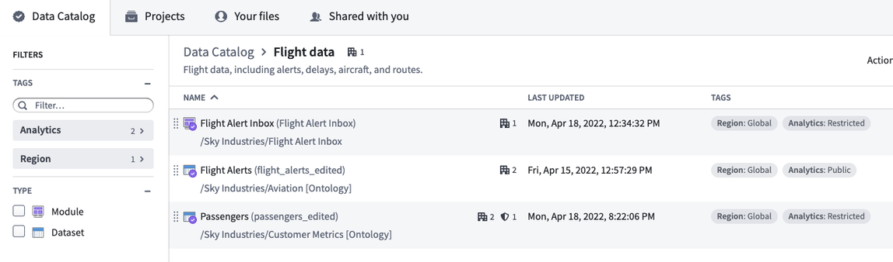
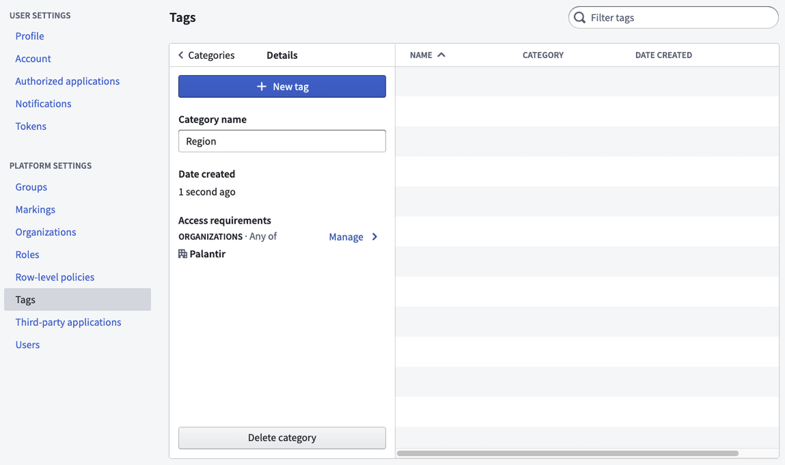
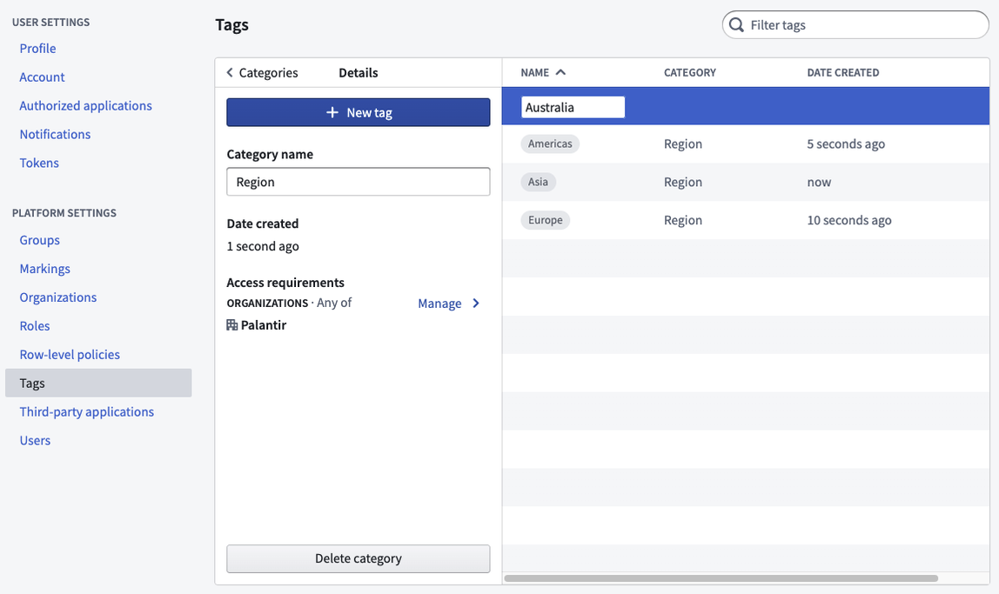

Tags are structured metadata that can be applied to resources for categorization and discovery. Tags are a helpful construct, but they do not add or imply security.
Tags are organized into categories; the visibility of each category can be restricted to one or more Organizations. For example, to organize sales data for a large international company you might create tag categories for region (such as âEUâ, âAPACâ, or âNAâ) and financial year (like â2021â or â2022â). Users can then filter collections in the Data Catalog and search by tag.
To generate comprehensive tags, consider the dimensions of your data. Common tag categories include:
Tags related to use cases may also be helpful, such as:
Below is a Data Catalog with tagged datasets and a tagged module:

You can manage tags and tag categories in the Tags section of Platform Settings. Select the New tag category to create a new tag category. By default, a new tag category will be restricted to the Organization of which you are a member.

After you create a tag category, you can add multiple tags within the category. You can also add additional Organizations to the tag category if you want to expand access.

To delete a tag category, select the category and then Delete category. Similarly, to delete a tag, select the tag, then Delete tag. You cannot undo delete actions, and the category or tag will be removed from all resources.
Only users granted a role with the "Apply tags to resources in Compass" workflow are able to apply tags to resources. If you do not currently hold a role with this workflow, request an administrator to assign it via the Organizations permissions tab in Control Panel.